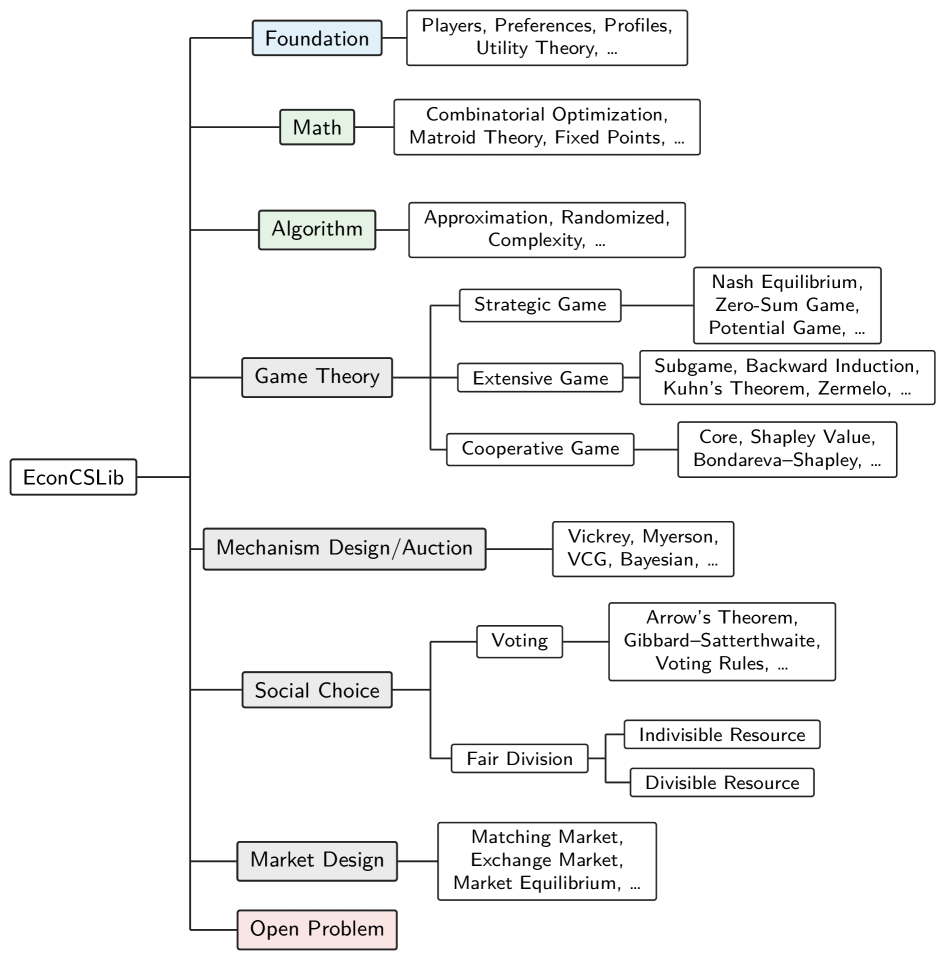

Presents EconCSLib, an early Lean 4 library of definitions and theorems for computational economics.
Abstract
Mathematical formalization uses interactive theorem provers to turn informal mathematical statements into machine-checkable artifacts. The success of mathlib, a large collaborative library for Lean, illustrates the potential of this approach. Recent progress in AI-assisted programming and theorem proving is also making large-scale formalization more practical. This paper presents EconCSLib, an early Lean 4 library for computational economics, as both infrastructure and a case study for AI-assisted formalization. The library aims to provide reusable definitions and theorems for game theory, mechanism design, social choice, and related areas. Beyond verified proofs of existing results, the library also aims to host machine-checked open problems and formalization of modern research papers. We discuss the design principles behind the library, the lessons learned from its development, and future directions for AI-assisted formalization in computational economics.
Problem
Computational economics lacks reusable formal infrastructure, and large-scale formalization in the area has been impractical.
Approach
EconCSLib is an early Lean 4 library providing reusable definitions and theorems for game theory, mechanism design, social choice, and related areas, and aims to host machine-checked open problems and formalizations of modern research papers. The paper discusses its design principles and the role of AI-assisted formalization.

Figure 3. A high-level organization of EconCSLib.
Results
Delivers an initial library serving as both infrastructure and a case study, with lessons learned and future directions for AI-assisted formalization in economics.